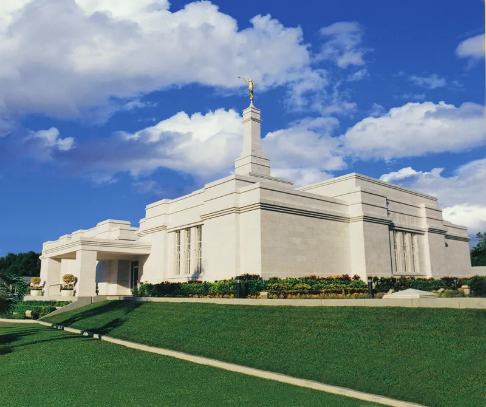
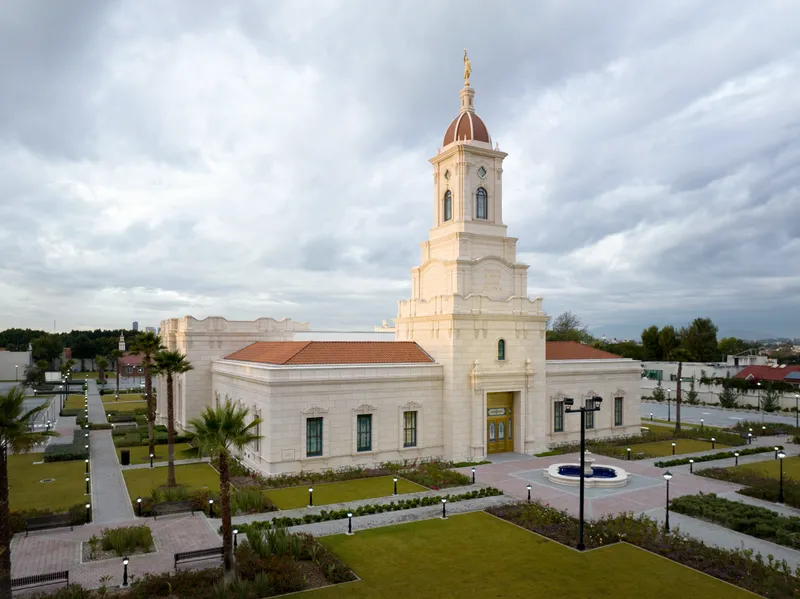
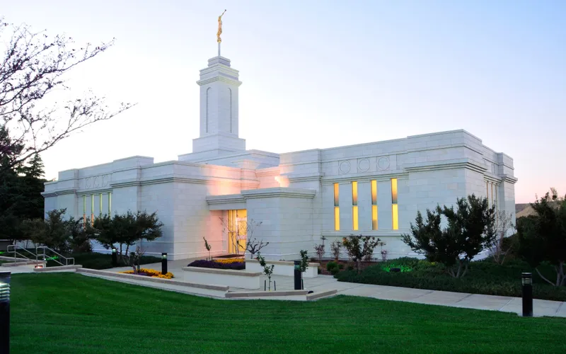
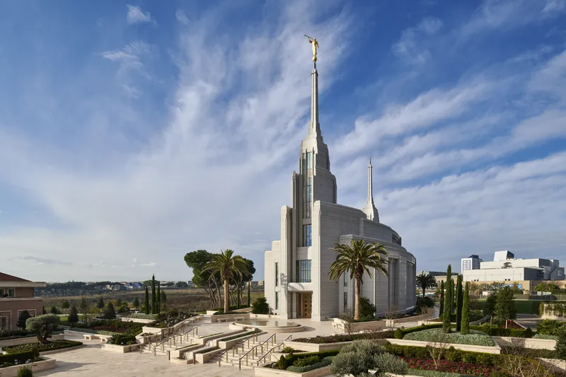
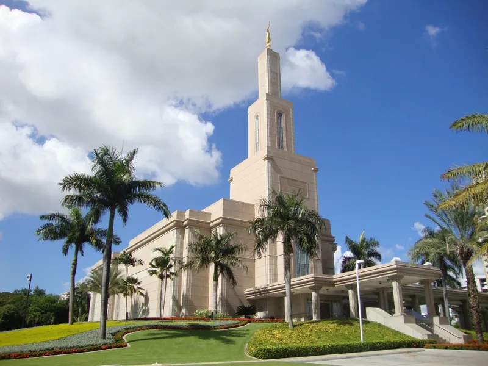
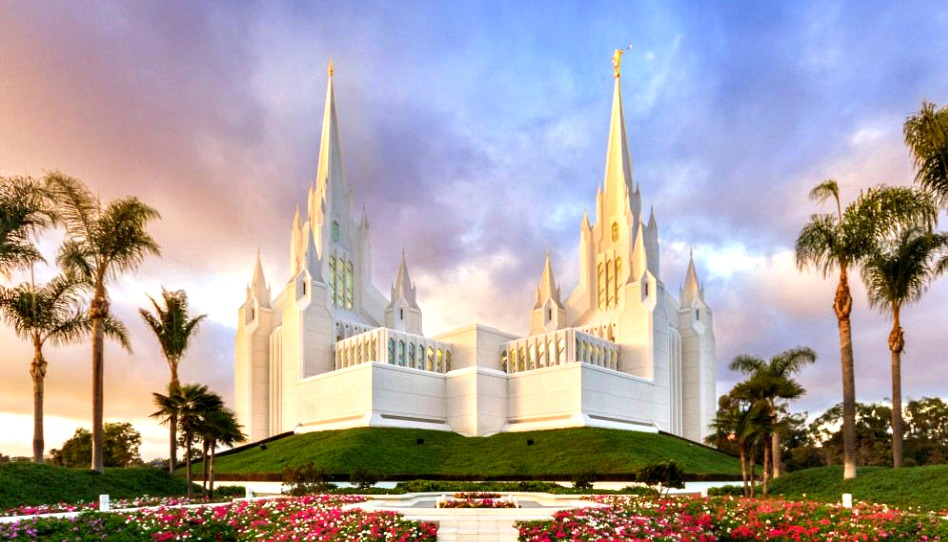

Temple Album
☰
Home
Old
New
Large
Small
Temple Album
Mexico City Temple

Merida Mexico Temple

Puebla Mexico Temple

Colonia Juarez Mexico Temple
Guatemala City Temple

Rome Italy Temple

Santo Domingo Republica Dominicana Temple

Arizona Temple
Salt Lake City Temple